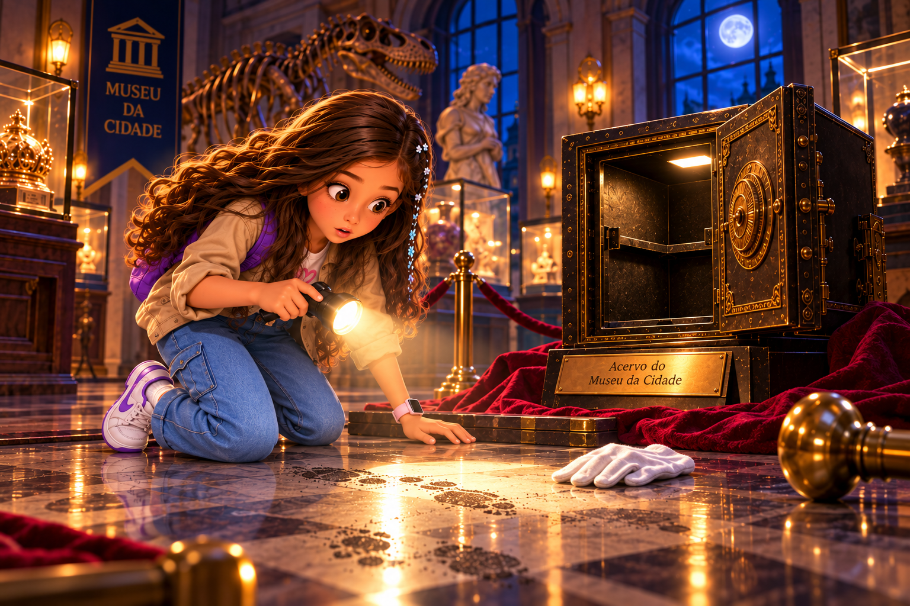
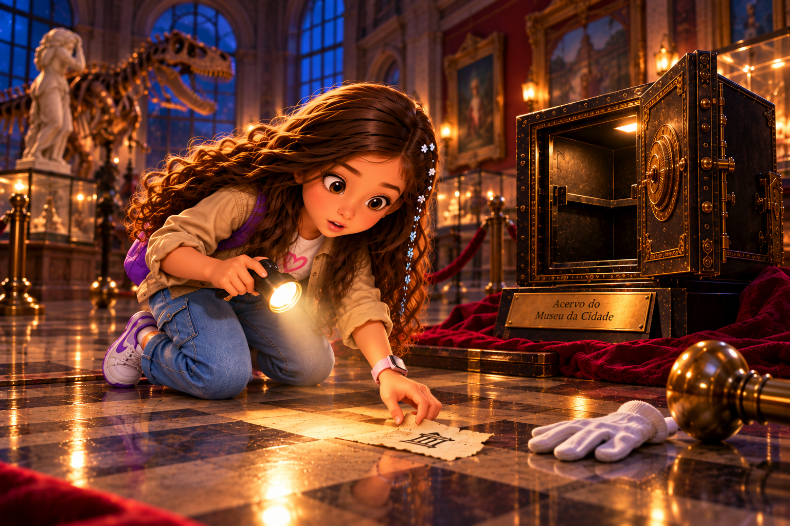

O Mistério do Cofre Impossível
O Museu da Cidade fechou às 18h. Às 21h, o cofre apareceu aberto. Sem arrombamento. Sem alarme. E dentro dele surgiu um objeto que não estava ali antes.

Uma anotação estranha
Ao lado do cofre, Jujuba encontra: “O número procurado, somado a 5, é maior que 12.”
Qual inequação representa corretamente a frase?
Que valores servem?
Resolva a inequação para descobrir quais números podem fazer parte do código.

Quatro registros
O sistema registrou quatro crachás depois do fechamento. Uma testemunha afirma que o número do crachá era maior que 7 e menor que 12.
Qual registro ainda é possível?
O quadro deslocado
Atrás de um retrato há um disco metálico. Nele está escrito: diâmetro = 10 cm.
Qual é o raio?
A volta completa
O disco tem diâmetro de 10 cm. Use π ≈ 3,14 e C = π · d.
Qual é aproximadamente o comprimento da circunferência?
Uma sala marcada
O número leva a uma planta. A sala destacada é retangular, com 8 m de comprimento e 5 m de largura.
Qual é a área?
Área por decomposição
A marca tem formato de L. Jujuba percebe que pode dividi-la em dois retângulos: um de 6 m × 2 m e outro de 3 m × 2 m, sem sobreposição.
Qual é a área total?
Primeiro cruzamento
Uma pista parece forte demais. Jujuba decide não acusar ninguém ainda.
A gaveta 14
Uma etiqueta diz: “O dobro do número da gaveta é menor que 30.”
Qual inequação traduz a pista?
14 serve?
Substitua x por 14. A afirmação fica verdadeira?
Uma segunda faixa de números
No verso do documento: x − 4 ≤ 8. Resolva a inequação.
O limite importa
Para x ≤ 12, qual valor abaixo pertence ao conjunto de soluções?
O selo circular
O selo tem raio de 7 cm. Qual é seu diâmetro?
Quanto mede a volta?
Com diâmetro de 14 cm, use π ≈ 3,14.
Qual segmento é qual?
Um segmento liga o centro da circunferência a um ponto dela. Como ele se chama?
O piso quadrado
Uma área quadrada da restauração tem lado de 6 m. Qual é a área?
Uma área para comparar
Uma faixa retangular da restauração mede 8 m de comprimento e 5 m de largura.
Qual é a área dessa faixa?
Duas partes, uma pista
Uma figura foi dividida, sem sobreposição, em um retângulo de 5 m × 4 m e outro de 3 m × 2 m. Qual é a área total?
A investigação apertou
As novas pistas confirmam que números-limite, raio e diâmetro e decomposição de áreas precisam ser lidos com precisão. Uma conclusão precipitada no primeiro painel poderia ter acusado a pessoa errada.
O próximo ato será a reconstrução completa da noite do cofre, seguida do confronto final.
9
12
14
6
Quatro pessoas, quatro versões
Restauradora • crachá 9
Segurança • crachá 12
Montador • crachá 14
Curadora • crachá 6
Jujuba não vai escolher pelo palpite. Cada depoimento será testado contra uma pista matemática.
O crachá visto no corredor
A testemunha lembra: 7 < x < 12. Qual dos quatro crachás satisfaz as duas condições?
A câmera muda tudo
Lia aparece no corredor, mas a câmera mostra que ela carregava uma moldura para restauração. O registro da oficina indica uma área máxima de 42 m². A peça ocupava 6 m × 7 m.
A peça respeita o limite?
Entrada registrada
permanência confirmada
Uma suspeita cai
O registro confirma que Lia entrou na oficina com a peça e permaneceu lá durante o intervalo em que o cofre foi aberto.
Uma ferramenta circular
O manual técnico informa que a chave de manutenção correta possui aro com diâmetro de 8 cm. Qual deve ser o comprimento aproximado desse aro? Use π ≈ 3,14.
Três aros
Jujuba encontra aros com comprimentos aproximados de 18,84 cm, 25,12 cm e 31,4 cm. Qual corresponde ao diâmetro de 8 cm?
Responsável: Caio
Horário: antes do fechamento
Uma assinatura inesperada
O aro correto foi retirado por Caio, o segurança. Mas o formulário diz “teste programado da fechadura”, autorizado antes do fechamento.
Isso prova que Caio abriu o cofre às 21h?
Quando o cofre podia ser aberto?
O sensor registra que o evento ocorreu quando x + 3 > 23, em que x representa a hora inteira após as 18h. Resolva a inequação.
20:00 — LIMITE —
21:00 EVENTO
Depois das 20h
O teste autorizado de Caio ocorreu às 19h. Portanto, ele aconteceu antes da janela indicada pelo sensor.
A passagem de serviço
A passagem tem formato composto. Ela pode ser dividida em dois retângulos, um de 4 m × 3 m e outro de 2 m × 3 m. Qual é a área total?
O mapa coincide
A área de 18 m² coincide com a marca encontrada no início do caso. A passagem conecta a restauração, a galeria e o corredor do cofre.
Última trava
O fecho aceita números que satisfazem 3x ≤ 27. Qual é a solução?
9
12
14
6
Compare com x ≤ 9
Entre os crachás 9, 12, 14 e 6, quais satisfazem a condição?
ALIBI ✓
SEM ALIBI
fora do limite
fora do limite
Duas pessoas podiam usar a passagem
Os crachás de Lia (9) e Helena (6) atendem à condição. Lia, porém, já tem registro contínuo na oficina durante a janela do cofre.
Helena passa a ser a única das duas sem esse alibi. Ainda falta descobrir se ela realmente percorreu a passagem.
Uma caixa com o mesmo formato
Na sala de Helena há uma embalagem composta por duas partes retangulares de 4 × 3 e 2 × 3. Ao lado dela, um aviso informa que a vitrine do lote estava temporariamente interditada para manutenção. A etiqueta de transporte informa área total de 18 unidades quadradas.
O cálculo confirma a etiqueta?
A origem do objeto
A etiqueta identifica a caixa como material da curadoria. O objeto misterioso encontrado dentro do cofre pertence ao mesmo lote da vitrine interditada. Um bilhete de Helena diz: “proteger a peça até a manutenção terminar”, mas não há registro oficial da mudança.
Qual conclusão é sustentada?
Qual opção usa corretamente as evidências sem transformar uma pista isolada em prova?
O Cofre Impossível
As evidências apontam para Helena como responsável pelo mistério. Ela podia acessar a passagem, o objeto veio do lote sob sua responsabilidade e a vitrine estava interditada. Helena colocou a peça no cofre para protegê-la durante a manutenção, mas não registrou a mudança. Por isso parecia que o objeto havia surgido ali do nada.
CASO 01 CONCLUÍDO
Relatório da Detetive JujubaTreino concluído
O relatório usa apenas as tentativas feitas neste navegador. Errar faz parte do treino: ele serve para mostrar onde vale revisar antes da prova.